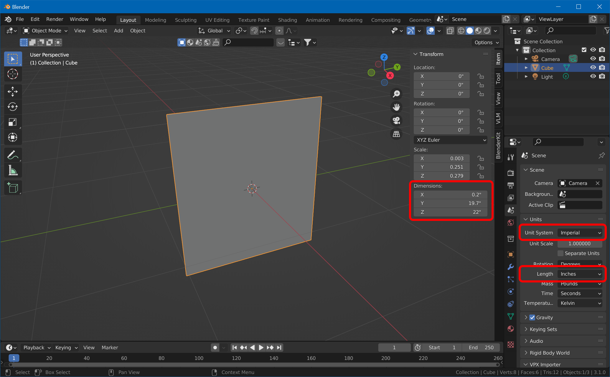
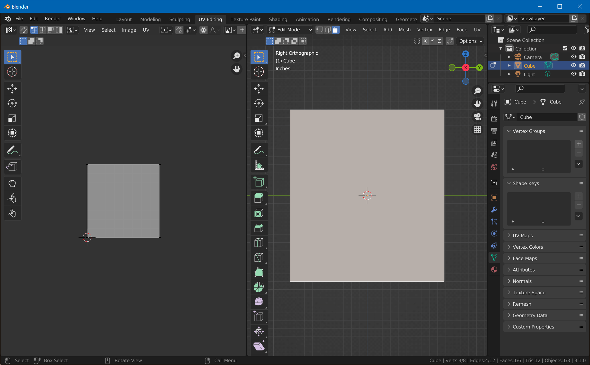

Create a Backglass Mesh
We're now going to edit Blender's default cube and unwrap it to fit the backglass artwork. Note: this might be the only tutorial on the internet that actually uses the default cube ;)
Create the Geometry
Open Blender and select the default cube. In the Scene Properties window, set units to Imperial and the length to Inches. With your mouse cursor over 3D viewport, hit N to show the transform properties of the cube. Enter the dimensions of your backglass in the Y and Z fields under Dimensions. The X value isn't really important, make it something small like 0.2".

Then, while the object is still selected, hit CTRL+A and choose Scale to apply the scale to the geometry.
Unwrap the Front Surface
The edges and the back side of the translite won't be visible, so we'll only unwrap the front side. Since the aspect ratio of the front side matches the aspect ratio of our maps, we can to project it entirely onto the map.
Change to the UV Editing workspace. Put your mouse cursor over the right window and press numpad 3 to switch to an orthographic front view of the backglass. Make sure you're in edit mode, hit 3 for face selection and click on the front face. Select UV -> Project From View (Bounds).

In order to clear the unused faces, hit CTRL+I, hover over the left side, hit 1 for point selection, type S for scale, and enter 0.
Clean Up and Export
Go back to the Layout workspace. Select Material Properties, click on Material and on the - button to remove it. Hit F2 and rename the Cube to Backglass.
Then, with the object still selected, choose File -> Export -> FBX. Check Selected Objects only, and name it Backglass.fbx.
You're now ready to import into Unity.